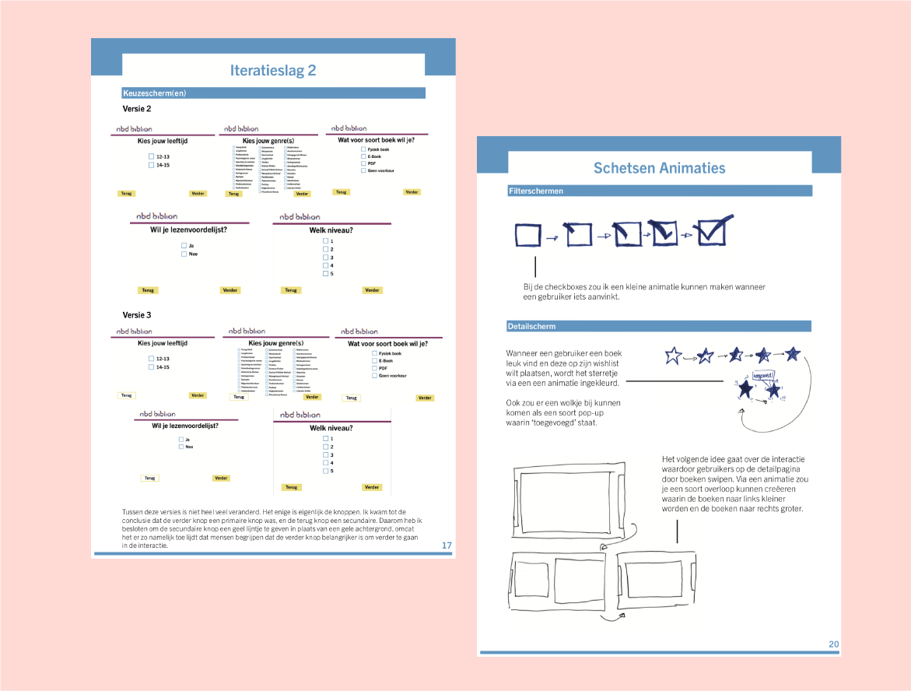
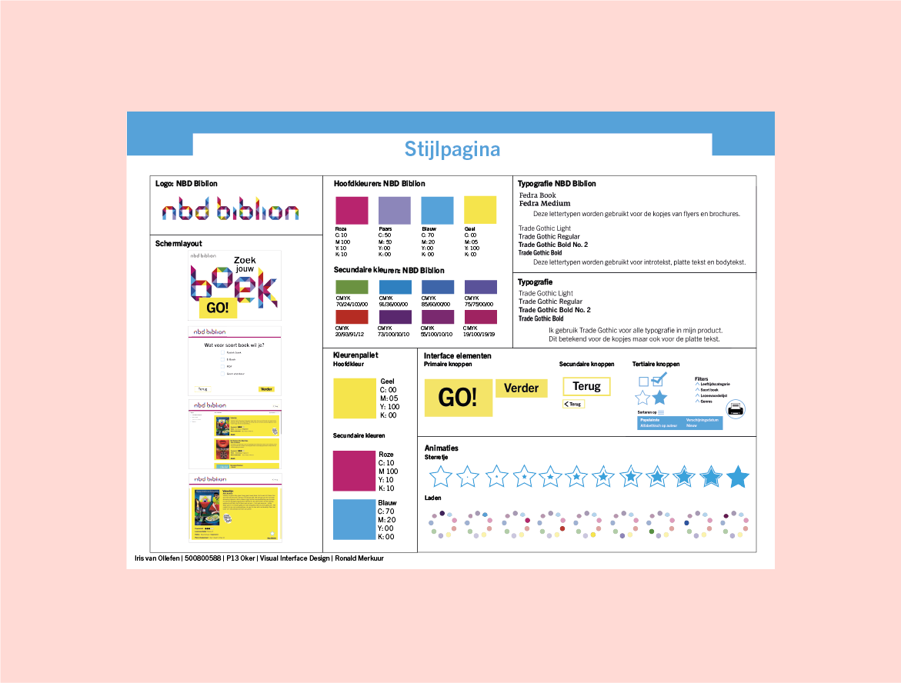

Situatie
NBD Biblion is een bibliotheek die zich meer bezig wilde houden met de bibliotheken in middelbare scholen. Daarom was de vraag of ik een tablet app wilde maken waarmee middelbare scholieren makkelijk boeken konden vinden in hun bibliotheek.
Het probleem was eigenlijk dat veel studenten die wel een boek wilde lezen of die aan het zoeken waren, deze niet konden vinden en daardoor het opgaven. Dat is natuurlijk niet de bedoeling, daarom moest het zoeken makkelijker worden.
Taak
Aan mij was de taak om veel onderzoek te doen naar de doelgroep, en hoe ik iets kon maken wat deze mensen ook echt aansprak.
Daarnaast moest ik vooral letten op de vormgeving, en dan vooral de interactie elementen, zodat er een duidelijke hierarchie was tussen alle knoppen.
Daarom heb ik ook een stijlpagina ontwikkeld waar al deze dingen in terug kwamen om zo tot een duidelijk overzicht te komen.
Activiteit
Zoals ik eerder al zei heb ik best veel onderzoek gedaan naar de doelgroep. Daarnaast heb ik telkens een nieuwe pagina gemaakt, omdat de totale app eigenlijk maar uit 5 schermen bestaat. Ik heb telkens iteraties gemaakt om de interactie elementen te verbeteren.
Uiteindelijk heb ik na al deze iteraties ook nog twee leuke GIFJE gemaakt om de algehele app nog iets interessanter te maken.
Resultaat
Ik vind het resultaat erg goed gelukt. Door alle iteratieslagen is er telkens een sterker resultaat uit ontstaan. Dit is errg interessant om terug te zien.
Ik heb veel feedback gehad van mijn docent en dit is ook de reden dat er telkens nog verbetering kwam.
Reflectie
Dit ontwerp is een goed voorbeeld van mijn Interaction Design omdat ik naast het compleet opnemen van de huisstijl het ook nog mijn eigen draai heb kunnen geven, en dit ook nog een goed bruikbare app heeft opgeleverd.
Bekijk alle iteratieslagen de stijlpagina hier.